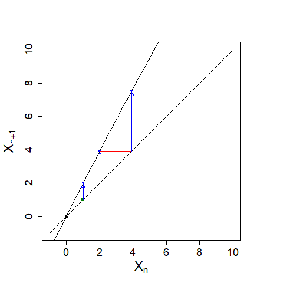
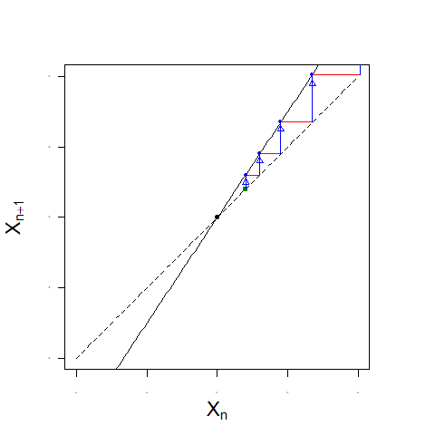
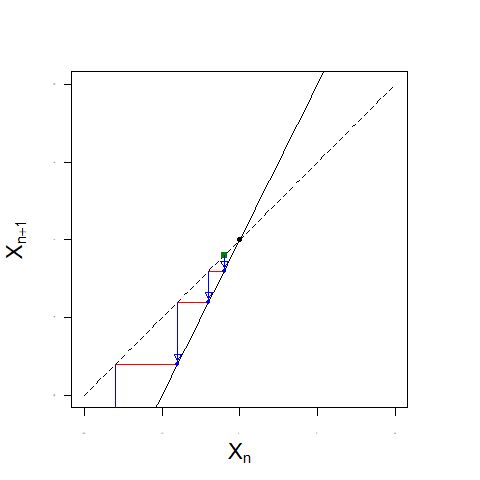
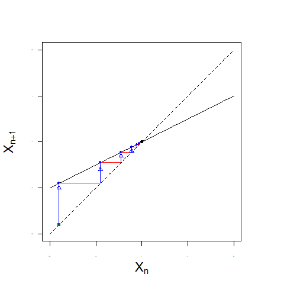
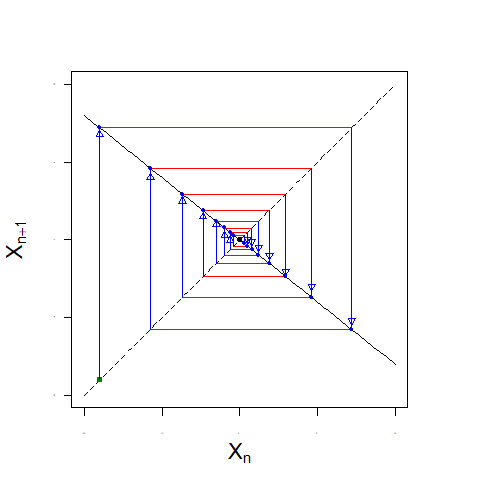
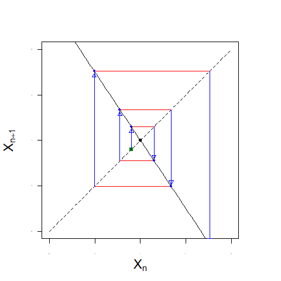
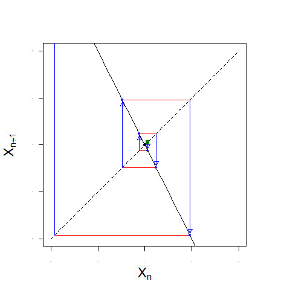
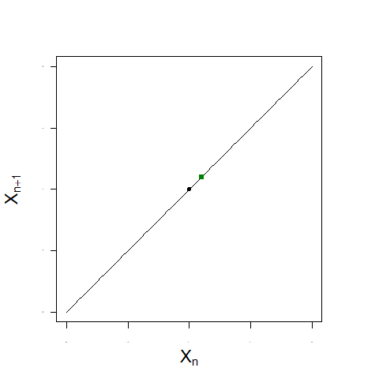
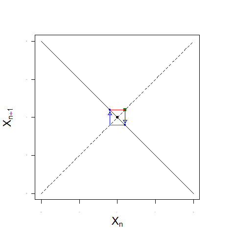

不動点を探して（後編：グラフで考える）
| 関数\(f\)を用いて\(X_{n+1}=f(X_{n})\)と表される関係があるとき、不動点とは、 |
|
を満たすような\(X\)のことでした。これはグラフで考えると、縦軸に\(X_{n+1}\)、横軸に\(X_{n}\)を取ったときの\(X_{n+1}=X_{n}\)と\(X_{n+1}=f(X_{n})\)の交点を意味します。
例として \(X_{n+1}=0.02(100-X_{n})X_{n}\)を考えたとき、不動点\(X=0\)と\(X=50\)は\(X_{n+1}=X_{n}\)と \(X_{n+1}=0.02(100-X_{n})X_{n}\)の交点でした。 しかし、交点における\(X_{n+1}=0.02(100-X_{n})X_{n}\)の傾きが違います。交点の近くに\(X_{N}\)（\(N\)は\(0\)以上の整数）を置いて、移り変わりを調べてみます。 以下、図の緑の点は座標\((X_{N}, X_{N})\)、黒の点は不動点、破線は\(X_{n+1}=X_{n}\)を表します。 |
|  |

|
|
\(X=0\)からは遠ざかって行って、\(X=50\)には近づいていく様子が見られました。
ここで\(f(X_{n})=0.02(100-X_{n})X_{n}\)を\(f(x)=0.02(100-x)x\)と置きなおして\(x=0\)と\(x=50\)での傾きを求めてみます。 |
|
なので |
| \(\frac{df}{dx} \mid_{x=0} =0.02(100-2\times 0)=2\) | \(\frac{df}{dx} \mid_{x=50} =0.02(100-2\times 50)=0\) |
|
つまり、不動点\(X\)での傾きが\(2\)のときは不動点から離れていき、傾きが\(0\)のときは近づいていきました。 もっと一般化して調べてみます。 |
|
（a）不動点\(X\)での関数\(f\)の傾きが\(1\)より大きいとき （b）不動点\(X\)での関数\(f\)の傾きが\(-1\)より大きくて\(1\)より小さいとき （c）不動点\(X\)での関数\(f\)の傾きが\(-1\)より小さいとき （d）不動点\(X\)での関数\(f\)の傾きが\(1\)か\(-1\)のとき |
|  |  |
| （a）不動点\(X\)での関数\(f\)の傾き（黒の実線）が\(1\)より大きいとき（上図） |
|  |  |
| （b）不動点\(X\)での関数\(f\)の傾き（黒の実線）が\(-1\)より大きくて\(1\)より小さいとき（上図） |
|  |  |
| （c）不動点\(X\)での関数\(f\)の傾き（黒の実線）が\(-1\)より小さいとき（上図） |
|  |  |
| （d）不動点\(X\)での関数\(f\)の傾きが\(1\)か\(-1\)のとき（上図） |
|
以上の図から得られたことをまとめてみます。不動点\(X\)の近くの点\(X_{N}\)を決めると、\(X_{m}\) (\(m> N)\) は、 （a）不動点\(X\)での関数\(f\)の傾きが\(1\)より大きいとき、不動点\(X\)から遠ざかる。 （b）不動点\(X\)での関数\(f\)の傾きが\(-1\)より大きくて\(1\)より小さいとき、不動点\(X\)に近づいてゆく。 （c）不動点\(X\)での関数\(f\)の傾きが\(-1\)より小さいとき、不動点\(X\)から遠ざかる。 （d）不動点\(X\)での関数\(f\)の傾きが\(1\)か\(-1\)のとき、それだけの情報では何もわからない。 ここで数学の表記を用いると、 ｢ \(\mathbb{R}\)における\(X\)のある近傍\(\mathcal{U}\)が存在して、もし\(X_{N}\in \mathcal{U}\)ならば、任意の\(n\)に対して\(f^{n}(X_{N}) \in \mathcal{U}\)となり、 さらに\(n \to \infty\) のときに \(f^{n}(X_{N}) \to X\) となる、という性質を持つとき、\(X\)は\(f\)の沈点あるいは吸引的不動点という。 同様に、\(f\)の反復によって\(X\)以外の全ての点の軌道が\(\mathcal{U}\)の外に出ていくとき、\(X\)は\(f\)の源点あるいは反発的不動点という。」 よって、数式を使ってまとめると以下になります。 |
|
\(f\)が不動点\(X\)を持つとき、 \(\Biggl| \frac{df}{dx} \mid_{x=X} \Biggr|>1 \)ならば、\(X\)は源点（吸引的不動点）である。 \(\Biggl| \frac{df}{dx} \mid_{x=X} \Biggr|<1 \)ならば、\(X\)は沈点（反発的不動点）である。 \(\Biggl| \frac{df}{dx} \mid_{x=X} \Biggr|=1 \)ならば、\(X\)の型については何の情報もない。 |
| 前のページへ戻る | 次のページへ進む |
「我流の非線型物理学」へ戻る